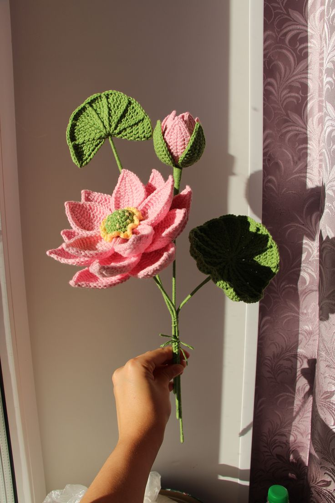
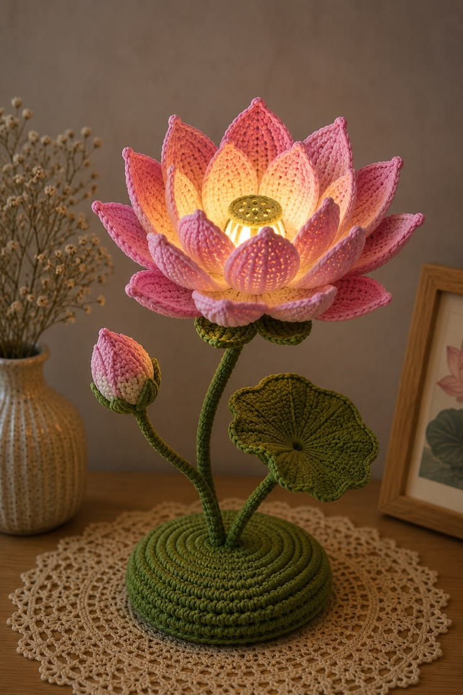
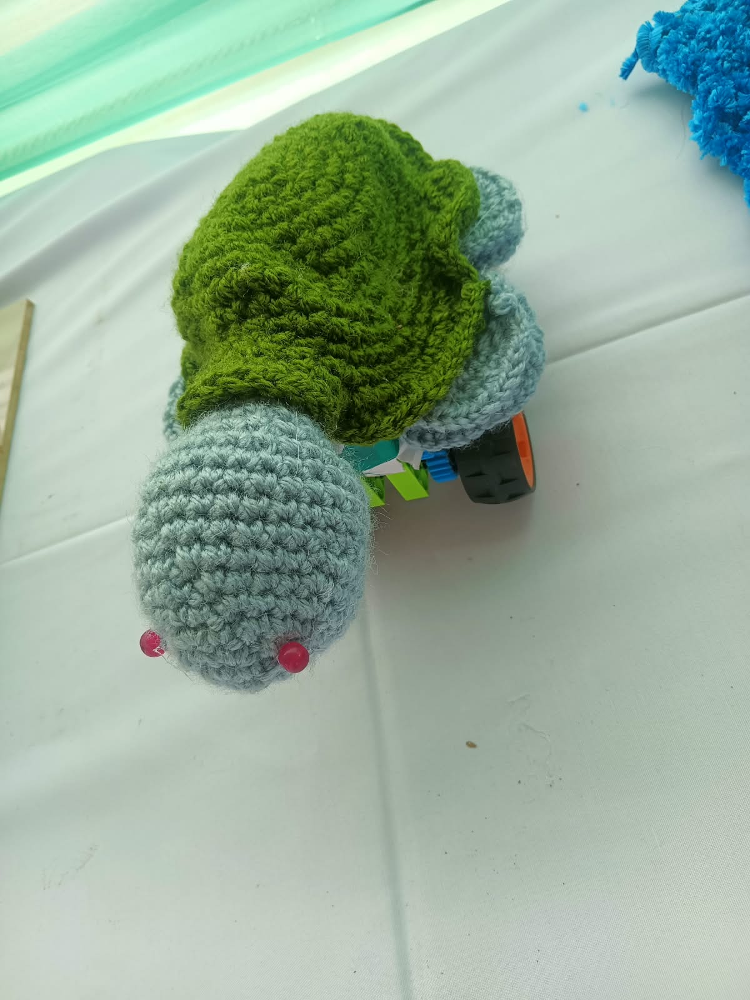
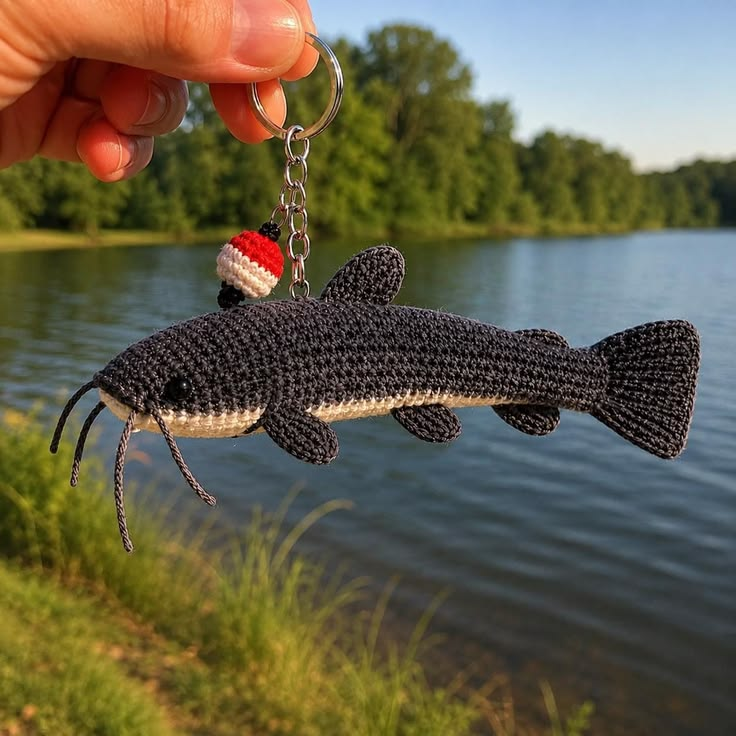
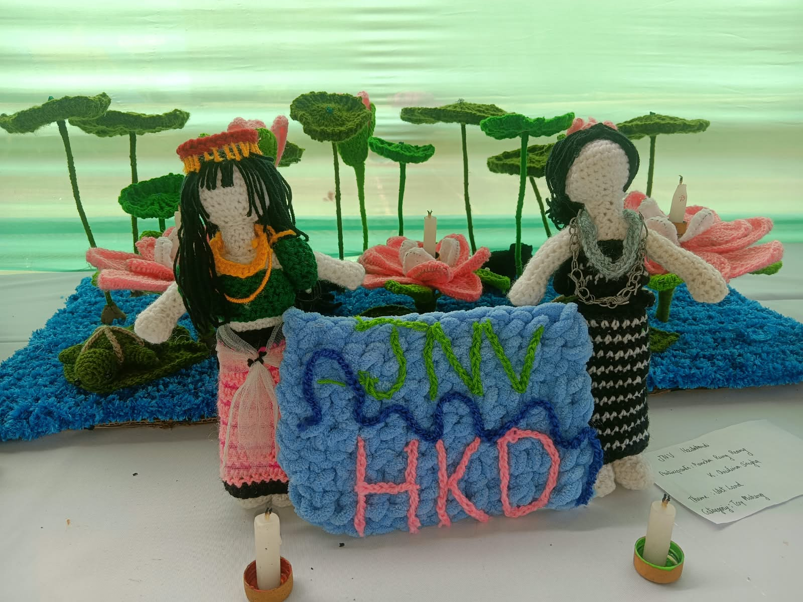

ক্রোশেটে প্রকৃতির উপস্থাপন
পদ্ম, কচ্ছপ আর ক্যাটফিশে সাজানো ক্রোশেটের একটি জলাভূমি, যা পদার্থবিদ্যা, রোবোটিক্স, চুম্বকত্ব আর আলোর ছোঁয়ায় প্রাণ পেয়েছে।
আমাদের প্রকল্প
আমাদের প্রকল্পে সবুজের মাঝে পদ্মে ভরা একটি সুন্দর জলাভূমির মেলবন্ধন দেখানো হয়েছে, যেখানে কচ্ছপ ও ক্যাটফিশের মতো জলের প্রাণীও আছে। এই ঐতিহ্যবাহী শিল্পে আমরা কিছুটা পদার্থবিদ্যা যোগ করেছি, যাতে প্রকল্পটি চোখে পড়ার মতো ও আলাদা হয়। আমরা আরও কিছু বিস্ময় যোগ করেছি, যাকে আমরা রোবোটিক্স, চুম্বকত্ব ও আলো বলি, জলাভূমিকে আরও সুন্দর করে তুলতে।

বিশেষ আকর্ষণ
কচ্ছপ ও ক্যাটফিশ

রোবোটিক্স, চুম্বকত্ব ও আলো

সংস্কৃতি তুলে ধরা ব্যানার হাতে দুই আদিবাসী মেয়ে (মেইতেই ও রিয়াং)

ক্রোশেট সম্পর্কে
“রঙিন সুতোয় শিল্পী ও সৃজনশীল মানুষদের স্বপ্ন বেঁধে ফেলার শিল্প।”
মজার তথ্য
1 সেকেন্ড
একটি সহজ চেন বানাতে সময়
~1 মিনিট
একটি জটিল চেন বানাতে সময়
কোটি কোটি
এই প্রকল্পের চেনের সংখ্যা, সবই আলাদা আলাদা নকশায়
আমাদের প্রকল্পে দুজন আদিবাসী মেয়ে আছে, একজন মেইতেই ও একজন রিয়াং। তারা একটি ব্যানার ধরে আছে, যা আমাদের প্রকল্প দেখায়, আমাদের সংস্কৃতির প্রতিনিধিত্ব করে এবং সেই অগণিত পরিশ্রমের কথা বলে, যা স্বপ্নটাকে সত্যি করেছে।
আমাদের অভিজ্ঞতা
আমরা যা শিখেছি
- নতুন নকশা ও সেলাই
- মানসিক ভারসাম্য
- সমস্যা সমাধান
- শেষ হওয়া প্রকল্প দেখে গর্ব ও তৃপ্তি
- সুতোর বল কীভাবে বাস্তব সৃষ্টি হয়ে উঠল, তা দেখে বিস্ময়
আমরা অষ্টম শ্রেণিতে ক্রোশেট শিখেছি এবং হাজার হাজার হেয়ার অ্যাক্সেসরিজ, ফুলের তোড়া ও চাবির রিং বানিয়েছি। বন্ধুদের সঙ্গে আমাদের ঝগড়া ক্রোশেটের মাধ্যমেই মিটেছে, আর তাতে আমরা সমস্যা সমাধান শিখেছি।
এই প্রকল্প বানানোর সময়
- বন্ধু, সিনিয়র ও শিক্ষকদের সঙ্গে তর্ক, মজা আর স্মৃতি
- এতে ধৈর্য, কঠোর পরিশ্রম ও নৈতিক মূল্যবোধ দরকার ছিল
- প্রকল্পটি শেষ হতে দেখার জন্য আমরা নিজেদের বিশ্রাম ত্যাগ করেছি
আমরা ৯টি ধাপে এটি বানিয়েছি
1
জলাভূমির থিমের ভাবনা ও পরিকল্পনা
2
নতুন নকশা ও সেলাই শেখা
3
পদ্ম, পাতা, কচ্ছপ ও ক্যাটফিশ বোনা
4
দুই আদিবাসী মেয়ে ও ব্যানার বানানো
5
ভিত্তি ও জলাভূমির দৃশ্য তৈরি
6
চুম্বকত্ব ও পদার্থবিদ্যার প্রভাব যোগ করা
7
রোবোটিক্স ও নড়াচড়া যোগ করা
8
জলাভূমি সাজাতে আলো লাগানো
9
চূড়ান্ত জোড়া লাগানো ও পরীক্ষা
যোগাযোগ ও দলের তথ্য
- অংশগ্রহণকারী
- K Christiina Singha, Pancha Rung Reang
- দলের নাম
- Team Lotus Weavers
- স্কুলের নাম
- Demo Public School, Your City, Your State
- প্রকল্পের নাম
- ক্রোশেটে প্রকৃতির উপস্থাপন
- অনুষ্ঠান
- ক্রাফটিং – কলা উৎসব, রিজিওনাল রেভেল
- শিক্ষক / পথপ্রদর্শক
- Mrs. Demo Teacher
- ইমেইল
- teamlotus.demo@example.com
- ফোন
- +91 00000 00000